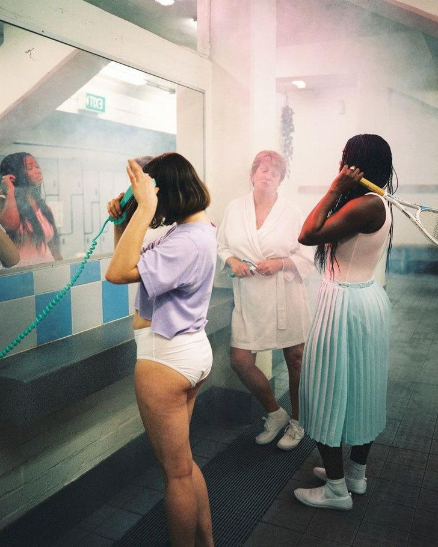
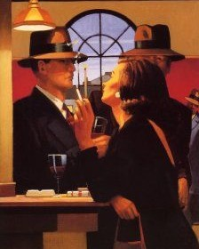

Entrevistas con mujeres que están marcando la diferencia en diversas industrias. Desde empresarias y creadoras de contenido hasta activistas y atletas, cada entrevista explora su recorrido, su visión de la vida y sus desafíos en un mundo en constante cambio.

La Fuerza del Feminismo Moderno
Voces de Mujeres que Están Redefiniendo el Poder.
El feminismo ya no es solo una palabra: es un movimiento vibrante que está dando forma a la sociedad actual. En este artículo, mujeres influyentes de diversos campos comparten sus perspectivas sobre lo que significa ser una mujer empoderada en la actualidad. Desde la lucha por la igualdad hasta la reivindicación del derecho a ser libres, estas voces están empujando los límites y cambiando las reglas del juego.
La Belleza Redefinida
Cómo las Mujeres Están Transformando los Estándares de Belleza en el Siglo XXI.
El concepto de belleza está en constante cambio, y las mujeres son las que lo están llevando al siguiente nivel. En este artículo, hablamos con modelos, activistas y creativas que están desafiando los estándares tradicionales y promoviendo una visión más inclusiva y diversa de la belleza. Porque la verdadera belleza no tiene un solo rostro: tiene mil formas, colores y tamaños
La Mujer en el Mundo del Trabajo
De la Lucha a la Toma de Decisiones.
Desde el ámbito corporativo hasta el emprendimiento, las mujeres están tomando el control de sus carreras y rompiendo barreras. Este artículo presenta las historias de mujeres que están liderando en sus industrias, compartiendo sus perspectivas sobre la igualdad salarial, la negociación de poder y la importancia de la visibilidad femenina en el mundo laboral. ¿Cómo es ser mujer en un entorno dominado por hombres y cómo están cambiando las reglas del juego?.
2/////HOMBRES CON ESTILO
En esta sección, exploramos la elegancia, el carisma y el poder que definen a los hombres de hoy. No se trata solo de lo que llevan puesto, sino de cómo viven, piensan y se presentan al mundo. Aquí encontrarás entrevistas con líderes, iconos de moda y hombres que desafían las normas, mostrando cómo el estilo se convierte en una extensión de su personalidad y éxito. Porque ser un hombre con estilo no es cuestión de tendencias, es una forma de vida, una actitud que deja huella.

En la Cima del Éxito
Cómo los Líderes Masculinos de Hoy Cultivan su Imagen y Poder.
El estilo no es solo lo que llevas puesto, sino cómo te presentas al mundo. Este artículo explora las vidas de empresarios, atletas y artistas que han logrado un éxito rotundo, analizando cómo su imagen personal juega un papel crucial en su liderazgo. Desde la elección de su guardarropa hasta la forma en que se comunican, descubre cómo estos hombres han perfeccionado su presencia para dominar en todos los aspectos de sus vidas.
Moda Masculina y Audacia
Entrevista con un Icono de Estilo que Rompe las Reglas.
Algunas veces, la moda masculina está destinada a romper las normas. Este artículo presenta una entrevista con un diseñador o modelo masculino que ha hecho de la audacia su marca personal. Con un enfoque disruptivo y único, nos cuentan cómo desafían las expectativas de lo que significa ser un hombre con estilo en un mundo tradicionalmente conformista. Un análisis de los riesgos que toman para destacar y dejar huella en la industria de la moda.
El Hombre Moderno
Cómo Redefinir el Estilo Personal en el Siglo XXI.
El estilo ya no es solo una cuestión de ropa, sino de actitud. En este artículo, hablamos con hombres influyentes de diferentes ámbitos —desde la moda hasta el cine— sobre cómo han evolucionado sus estilos personales a lo largo de los años. ¿Cómo se mantiene relevante un hombre cuando las tendencias cambian constantemente? Estos hombres comparten sus secretos para mantenerse a la vanguardia sin perder su autenticidad.